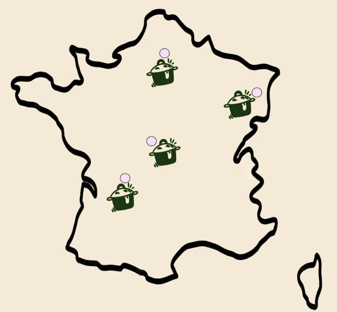
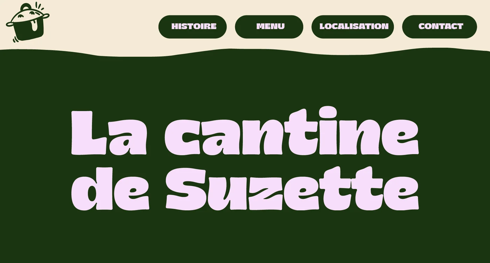
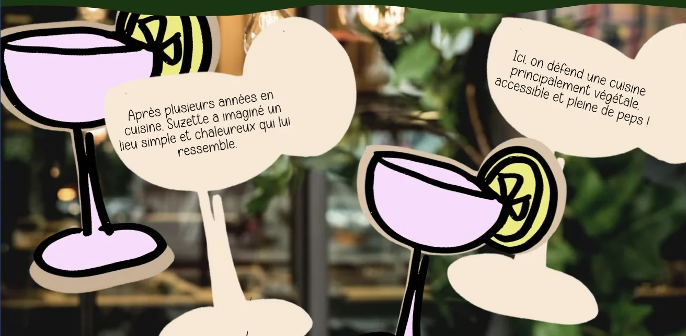
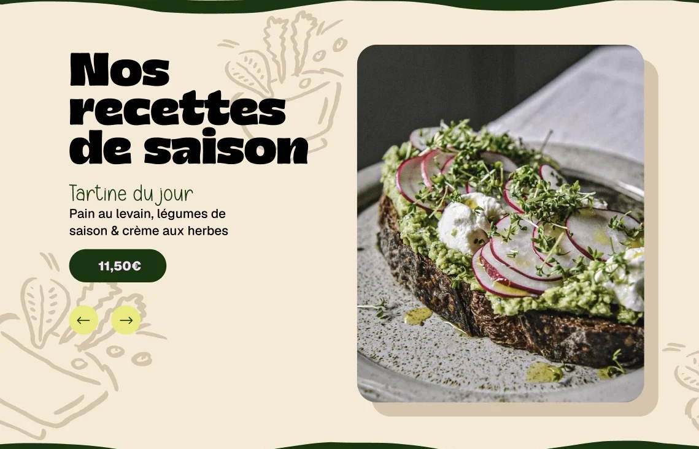
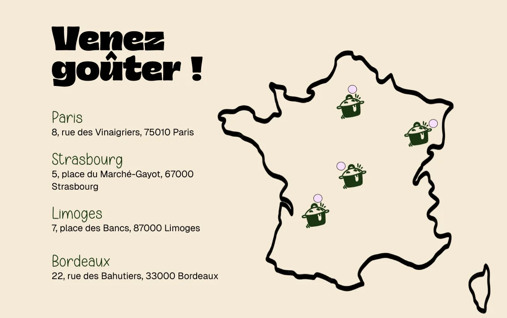
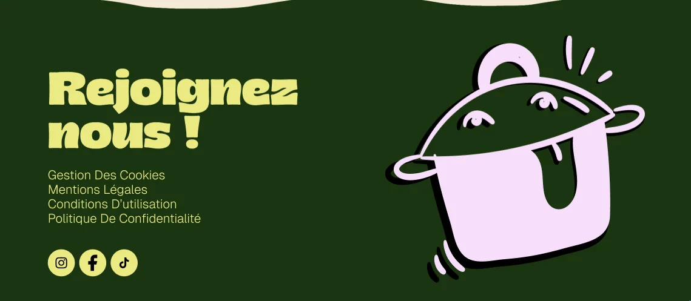

Universitaire
la cantine de suzette
Les maquettes et les illustrations du site vitrine d'une cantine à la cuisine principalement végétale, pensées pour donner envie de passer à table.
Projet fictif : le restaurant et ses contenus sont fournis par le brief.
le brief
Concevoir la landing page vitrine d'un restaurant fictif, à choisir parmi cinq établissements qui ont chacun leur univers. La cantine de Suzette est une cantine végétale contemporaine, accessible et conviviale, pensée pour les actifs, les étudiants et les habitants du quartier qui veulent manger vite, sainement et avec gourmandise.
Une seule page au format desktop, avec au minimum une navigation, l'histoire du lieu, le menu, la localisation et un pied de page, sans commande ni paiement en ligne. L'enjeu : construire une direction artistique cohérente sur toute la page et donner envie de pousser la porte du restaurant.

mes illustrations
Le brief donnait le point de départ : la mascotte casserole, dessinée par l'enseignant, la police Bamboy pour les titres, une palette et cinq mots-clés à faire ressentir.
J'ai dessiné toutes les autres illustrations du site, au même trait épais et spontané que la mascotte : la carte de France des adresses, les cocktails, les légumes griffonnés et les vagues qui séparent les sections.
[Explique ici tes choix : pourquoi ce style de dessin, et comment tu as adapté la palette de départ ?]
- sapin
- crème
- lilas
- citron
- noir
le site
Une seule page qui se découvre au scroll, dans l'ordre du menu : histoire, menu, localisation, contact.





mon role
J'ai conçu les maquettes de la landing page, de la navigation au pied de page, et dessiné les illustrations. La mascotte casserole était fournie avec le sujet.